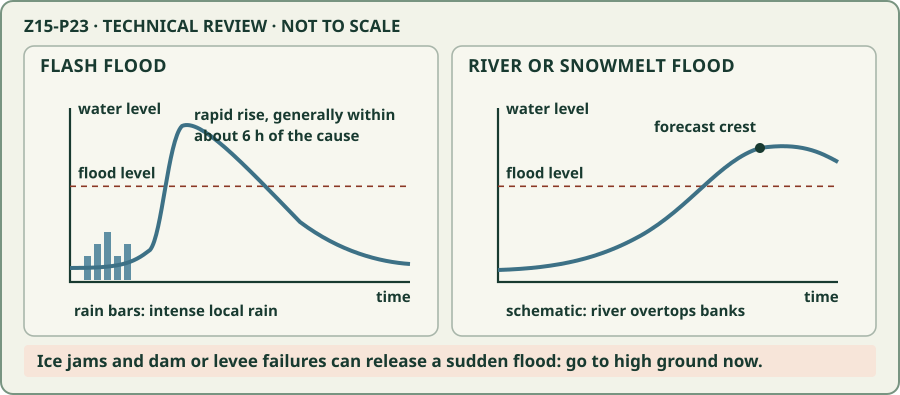

Z15-P23 · Disaster scenarios · New manuscript
Distinguish slow river/snowmelt floods from sudden Flash Flood Warnings
Match household preparation lead times and immediate high-ground evacuation urgency to the exact flood mechanism.
When it applies · River valleys, snowmelt basins, urban storm-drain low spots, creek canyons, and properties below dams or levees.
Equipment · Local river-gauge/NWS alert feeds, county flood-zone map, high-ground evacuation route, and pre-packed go-bags.

Actions
- Distinguish river/snowmelt flooding (builds over hours to days with predictable crest forecasts—allowing early document/vehicle moving, utility prep, and orderly evacuation) from Flash Flooding (erupts within minutes from intense rainstorms, clogged urban drains, ice jams, or dam/levee failures with violent wall-of-water surges).[D05, T16, E04]
- Act IMMEDIATELY on a Flash Flood Warning or Flash Flood Emergency: move straight to verified higher ground on foot or along open high roads BEFORE low streets, underpasses, and creek bridges vanish underwater.[D05, T16]
- Remember that levees and dams reduce risk rather than eliminating it—any official levee-breach or dam-failure evacuation order demands instant high-ground departure with zero delay.[D05, D14]
Failure recognition · Waiting to watch a rising neighborhood creek out the window during a Flash Flood Warning until the single exit road washes out.[D05, T16]
Verify · Confirm home flood-zone status checked, two elevated exit routes mapped, and Flash Flood Warnings treated as instant high-ground triggers.[D05, D14]
Stop or change course · Rising water in basements, rushing street gutters, or official evacuation orders halt packing immediately—move people to high ground NOW.[D05]
Evidence and editorial notes
- D05 · FEMA / Ready.gov · Floods (current web edition)
- Section: Floods: During; Turn Around, Don’t Drown · Conditions: Flooded roads or trails, flood alert, or post-flood re-entry
Support: Move to safe higher ground when directed, never walk or drive into floodwater, and respect closures and re-entry restrictions.
Limitations: Depth examples are warning illustrations, never safe entry thresholds. Trapped or submerged vehicles require emergency help and scene-specific response. · Conflicting evidence: See A02 claim audit for boundaries.
Editorial note: Core flood evacuation, water-avoidance, and safe re-entry evidence. · Specialist reviewer: Emergency management and flood hydrology
Primary source · checked 2026-11-24 - D14 · FEMA / Ready.gov · Evacuation (current web edition)
- Section: Before, during and after evacuation · Conditions: Official evacuation or a preplanned, safely accessible departure
Support: Prepare a go-kit, routes, transport and a contact plan. Follow official routes and use the locally indicated registration or reunification channel.
Limitations: Shelter accessibility and animal accommodations require local and ADA guidance; no fixed national website is assumed. · Conflicting evidence: See A02 claim audit for boundaries.
Editorial note: Core evacuation execution and accountability evidence in Z15. · Specialist reviewer: Emergency management and transportation safety
Primary source · checked 2026-11-24 - E04 · NWS · Flood Safety: Key Points for Camping and Hiking (agency PDF)
- Section: Before and during camping; know your surroundings · Conditions: Stream valleys and runoff channels subject to flash flooding
Support: Choose higher ground away from water channels. Rain far upstream can drive rapid flooding.
Limitations: Dry streambeds and gentle swales can flood rapidly without local rainfall. · Conflicting evidence: None; aligns with NWS-FLOOD.
Editorial note: Core hydrological exclusion rule for shelter placement. · Specialist reviewer: Emergency management and hydrology
Primary source · checked 2026-11-24 - T16 · NWS · Flood Safety (current web edition)
- Section: Flood Watches and Warnings; Turn Around Don’t Drown · Conditions: U.S. flood alerts and routes crossing moving or standing floodwater
Support: Use the local flood alert wording and follow directions to move to safer higher ground. Never drive around a barricade or enter a flooded route.
Limitations: Stages, timing and detours depend on event and locality; no observable safe crossing depth. · Conflicting evidence: See A02 claim audit for boundaries.
Editorial note: Clarifies Watch vs Warning decision thresholds in Z01 scenarios. · Specialist reviewer: Emergency management and meteorology
Primary source · checked 2026-11-24
Source lineage · FEMA Ready.gov Floods and NWS; new manuscript · Classification · New manuscript.